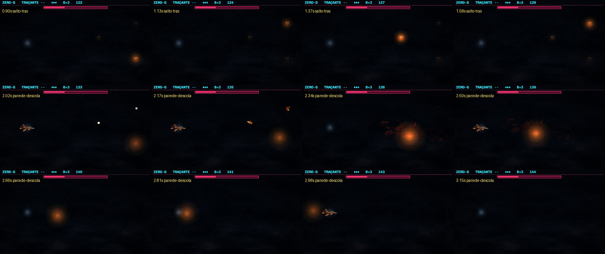
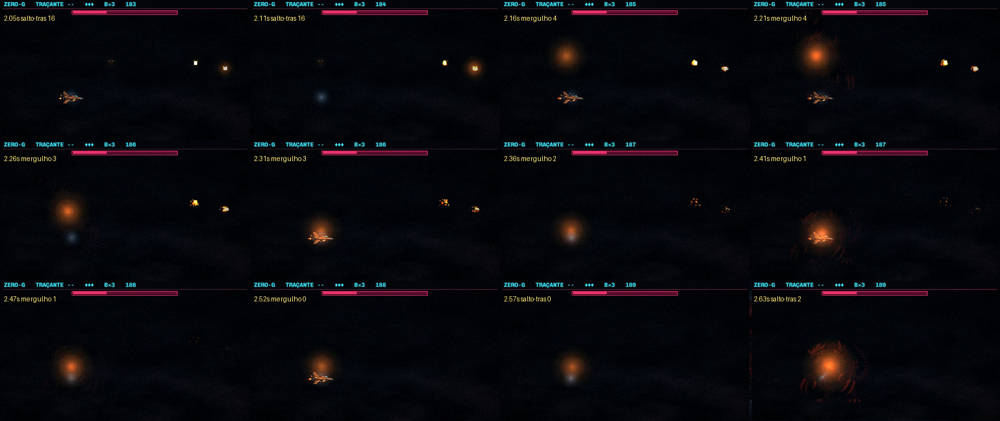

25/11. Spec 2026-11-24-besta-refeita-design.md §4.3, com a sua escolha "A"; o plano está em plans/2026-11-25-besta-passo7-olhos.md. Tudo foi filmado no jogo rodando, no breu (?fase=besta3&mao=nenhuma), no tempo real, com a nave parada e invulnerável. Nada aqui está aprovado.

Da parede. Nos quadros de 1,4 s e 1,6 s, a brasa do meio acende entre os batimentos (a isca), e a verdadeira, a de baixo, espera o batimento.

Do teto: o mergulho é só o soltar do agarrar (quadros 4 → 0). O clipe inteiro ao contrário ficava pendurado em três quartos do tempo e caía no fim.
| O que fiz | Por quê | |
|---|---|---|
| 1. O coração acelera | Nos olhos o batimento vai de 2,4 s para 0,8 s. | Com o batimento lento do breu, os dois batimentos seriam quase 5 s de espera. A spec pede ~1,6 s. |
| 2. As três figuras | (parede 60, parede 150, teto 250) · (parede 105, teto 175, teto 300) · (parede 70, parede 165, teto 220). A verdadeira está em negrito. | Uma tabela fixa que gira, com a verdadeira alternando parede e teto. |
| 3. As brasas | Elas estouram só em faíscas, sem perigo. | A spec diz "um respingo curto em volta, sem projétil longo". Achei que um perigo a mais ali só pune. |
| 4. O teto | Os olhos correm até a coluna da nave (700 px/s) e a queda é reta. | Cair na diagonal fazia o corpo deslizar pendurado. Os olhos correndo no escuro leem como "ela está vindo por cima de você". |
| 5. A volta depois da parede | Ela sai pela esquerda sem parar e volta pela direita: a luz de aviso na borda e o galope até a âncora. | Ficar na parede da esquerda seria ficar atrás da nave. |
| 6. Os olhos em dobro | Resolvido no passo 8: a ordem da fase 3 agora é olhos → golpe → lava → olhos → coração ↻. | O coração entrou entre os dois. |
node --experimental-transform-types scripts/test-besta-olhos.mjs):
node scripts/_f4/_besta-olhos.mjs [pasta]), em 5 aparições no breu, tudo certo:
src/entities/besta/olhos.ts e os dois testes;Predador.ts (o estado olhos, as luzes e os olhos assados em pixel, o batimento que marca a nave, os dois saltos, o mergulho, e o reentrar que agora volta à âncora). Nada commitado.